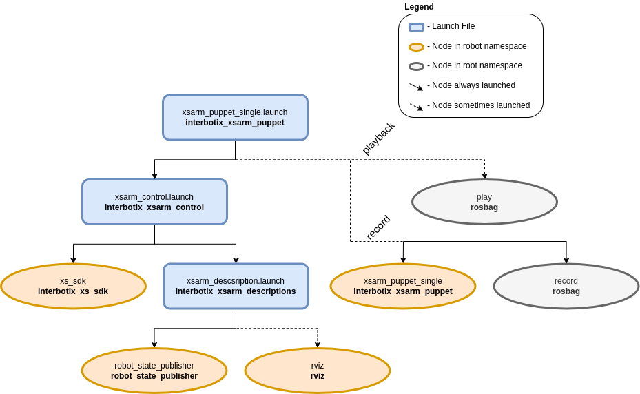

Record And Playback
 View Package on GitHub
View Package on GitHub
Overview
Imagine that you would like to have the robot arm perform some motions to achieve a specific task. One way of doing this would be to create a JointTrajectory of desired joint positions at specific times which you could then command the robot. Alternatively (and much less time consuming), you could manually manipulate the arm to do the specific motions and record them in a ROS bag file. Then, you could ‘play back’ the bag file as many times as you like to repeat the motions on the same robot later. This ‘record/playback’ feature is made possible by the xsarm_puppet_single.
Structure
As shown below, the interbotix_xsarm_puppet package builds on top of the interbotix_xsarm_control package. To get familiar with that package, please look at its README. The nodes specific to this package are described below.
The above diagram shows the structure for the ‘record/playback’ feature. The two nodes involved are:
- xsarm_puppet_single - responsible for reading the arm’s current joint states and publishing
them as position commands to the
/<robot_name>/commands/joint_groupand/<robot_name>/commands/joint_singletopics. Conveniently, as the arm is torqued off so that the user can manipulate it, the joints will not act upon these commands - record - responsible for recording the two topics mentioned above in a bag file so that they can be played back later
- play - responsible for playing back the bag file mentioned above with the arm in a torqued on state; the playback is delayed 3 seconds to give time for the xs_sdk node to load
Usage
To record joint commands while manipulating a single robot (let’s say the PincherX-150), type the following in a terminal:
$ roslaunch interbotix_xsarm_puppet xsarm_puppet_single.launch robot_model:=px150 record:=true
Once the nodes finish launching, manually manipulate the arm and gripper through your desired motions. When done, return the robot to its initial starting position and Ctrl + C the nodes so that rosbag stops recording. By default, the bag file will be saved in the bag directory. To playback the motion, type the following in the terminal:
$ roslaunch interbotix_xsarm_puppet xsarm_puppet_single.launch robot_model:=px150 playback:=true
If you specified a custom bag file name, make sure to include the name in the above command as well. When the bag file finishes playing, you can restart it by navigating to the directory where the bag file is located and in a terminal, type:
$ rosbag play <bag file name>
The robot should now repeat the motions. When done, Ctrl + C to stop all nodes. To see other command line arguments for the ‘xsarm_puppet_single.launch’ file, refer to the table below.
| Argument | Description | Default Value |
|---|---|---|
| robot_model | model type of the Interbotix Arm such as ‘wx200’ or ‘rx150’ | “” |
| robot_name | name of the robot (typically equal to robot_model, but could be anything) |
$(arg robot_model) |
| base_link_frame | name of the ‘root’ link on the arm; typically ‘base_link’, but can be changed if attaching the arm to a mobile base that already has a ‘base_link’ frame | base_link’ |
| use_rviz | launches RViz | true |
| record | record joint commands while physically manipulating the arm to a bagfile | false |
| playback | play-back joint commands from a bagfile to a torqued on arm | false |
| bag_name | Desired ROS bag file name | $(arg robot_name)_commands |
| launch_driver | true if the xsarm_control.launch file should be launched - set to false if you would like to run your own version of this file separately | true |
| use_sim | if true, the Dynamixel simulator node is run; use RViz to visualize the robot’s motion; if false, the real Dynamixel driver node is run | false |
Notes
There is a bag file in the bag directory. It was created using the ‘record/playback’ feature with the WidowX 250 arm. See if you can figure out what it does! As a hint, it involves rubber ducks. To run it in simulation, type…
$ roslaunch interbotix_xsarm_puppet xsarm_puppet_single.launch robot_model:=wx250 use_sim:=true playback:=true bag_name:=duck_dunk